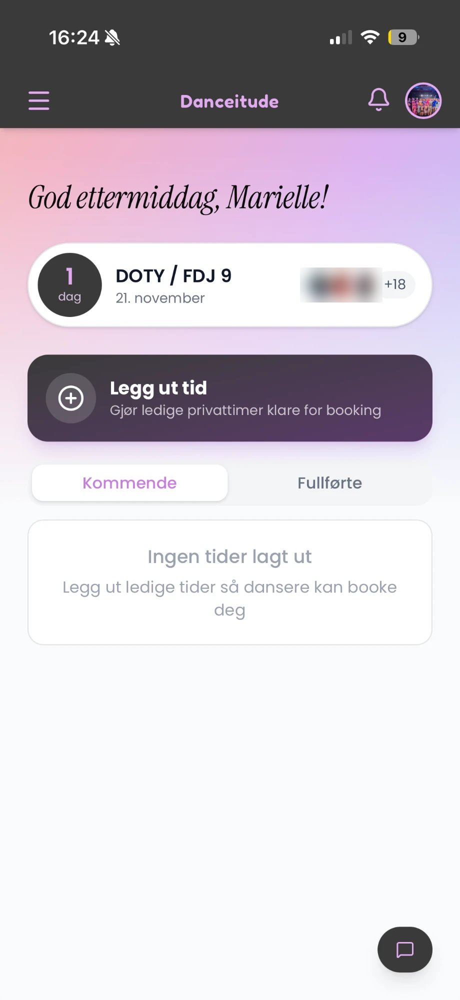
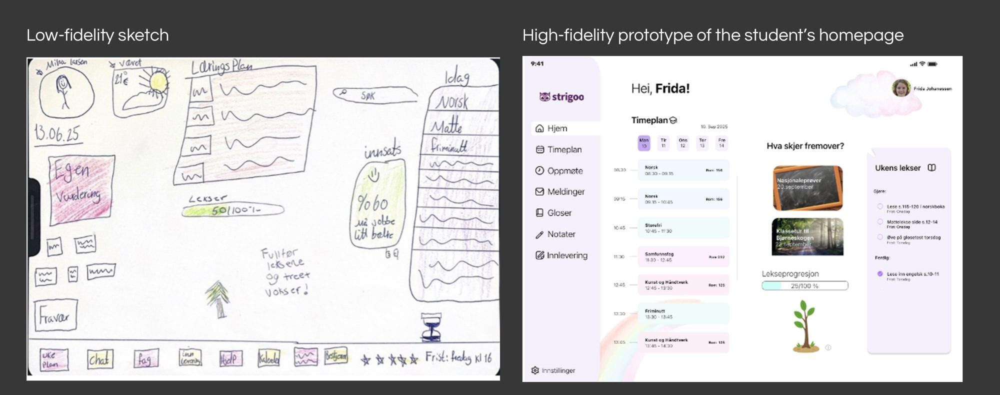
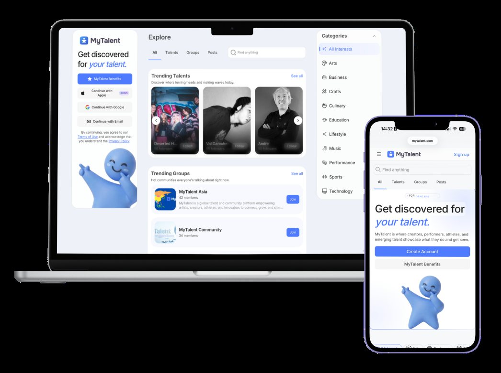

Utvalgt arbeid

Danceitude
Bookingapp for danseklubber – designet og utviklet alene, fra workshops med brukerne til App Store. 200 brukere.
Se casen
Digital leksemodul
Masteroppgave: participatory design sammen med barn, foreldre og lærere. Karakter A.
Se casen
MyTalent
Brukeropplevelse, brukertesting og designledelse for en talentplattform på mobil og web.
Se casenAndre prosjekter

SkyeTec – påmelding til seminar
Kort skjema med bekreftelse på siden og kalenderinvitasjon på e-post, og enkel deltakerliste for arrangøren.
Delt planleggingskalender
Internt verktøy for SkyeTec, bygget med Claude Code: tydelig statusflyt og rettigheter etter rolle.
Jeg designer. Tester. Bygger
- 01
Brukerinnsikt og research
Workshops, intervjuer og observasjon – og systematisk analyse av funnene.
- 02
UX-design og prototyping
Brukerreiser, informasjonsarkitektur og microcopy, fra skisse til prototype i Figma og Adobe XD.
- 03
Brukertesting og evaluering
Tester på ekte enheter og gjør funnene om til konkrete forbedringer.
- 04
Universell utforming
Kontrast, tydelige etiketter og støtte for tastatur og skjermleser fra start.
- 05
Produktutvikling
Fra idé og prioritering til lansering i App Store og videreutvikling.
- 06
AI-assistert utvikling
Claude Code til kodebaserte prototyper og fungerende apper.
- 07
Samarbeid og designledelse
Tett på utviklere, designere og ledere. Har ledet designteam.
- 08
Fra kompleksitet til enkelhet
Gjør rotete hverdagsprosesser om til enkle tjenester.
Om meg
Jeg er en nysgjerrig og kreativ interaksjonsdesigner som liker å forstå hvorfor ting fungerer som de gjør – og hvordan de kan gjøres bedre. Jeg trives aller best når jeg får kombinere mennesker, design og teknologi for å løse faktiske problemer.
Jeg har en mastergrad i Applied Computer Science med spesialisering i interaksjonsdesign fra Høgskolen i Østfold. Gjennom studier og prosjekter har jeg jobbet med alt fra brukerintervjuer og brukertesting til prototyping, UX-evaluering og utvikling av digitale løsninger. Jeg liker å involvere brukerne tidlig, utfordre etablerte måter å gjøre ting på og finne løsninger som både er intuitive og nyttige.
I dag leder jeg markedsføring og design i AI-selskapet SkyeTec, hvor jeg også jobber som Interaction Specialist. Her får jeg kombinere strategisk og kreativt arbeid med interaksjonsdesign, teknologi og kunstig intelligens. Jeg bruker AI aktivt som en del av arbeidsprosessen, både til å utforske ideer, designe og utvikle fungerende løsninger.
Jeg er også glad i å skape ting på egen hånd. Et godt eksempel er Danceitude, en app jeg har designet og utviklet fra bunnen av for å gjøre hverdagen enklere for danseklubber, trenere og dansere. Det som startet med et problem jeg selv opplevde i dansemiljøet, har blitt et produkt med 200 brukere. For meg er det noe av det morsomste med design – å se en idé bli til noe mennesker faktisk får nytte av.
Utenfor jobb finner du meg gjerne i dansesalen, hvor jeg også er trener. Dans har vært en stor del av livet mitt og har lært meg mye om kreativitet, samarbeid og det å forstå ulike mennesker. Den erfaringen tar jeg med meg inn i måten jeg jobber som designer på.
Erfaring og utdanning
Erfaring
- 2023 –
Head of Marketing & Design · Interaction Specialist
SkyeTec · leder markeds- og designarbeidet, nettsidens struktur og brukeropplevelse, merkevare og interne verktøy
- 2025 – 2026
Delivery Manager & Interaction Specialist
MyTalent · ledet designteamet, ansvarlig for brukertesting og interaksjonsdesign i Figma
- 2026 –
Gründer, designer og utvikler
Danceitude · bookingapp i App Store, 200 brukere i tre danseklubber
Utdanning
- 2023 – 2025
Master i Applied Computer Science
Høgskolen i Østfold · interaksjonsdesign · karakter A
- 2021 – 2023
Bachelor i digitale medier og design
Høgskolen i Østfold · kommunikasjon · A på bacheloroppgaven
- 2020 – 2021
Årsstudium i informasjonssystemer
Høgskolen i Østfold
- 2024 – 2026
Videreutdanning i KI
Høgskolen i Østfold · generativ KI (2024) · generativ KI for kreative bransjer (2025) · Microsoft Copilot (2026)
Har du noe spennende i tankene?
Gode ideer starter med en samtale.
Et prosjekt, en idé eller bare lyst til å slå av en prat? Jeg hører gjerne fra deg.